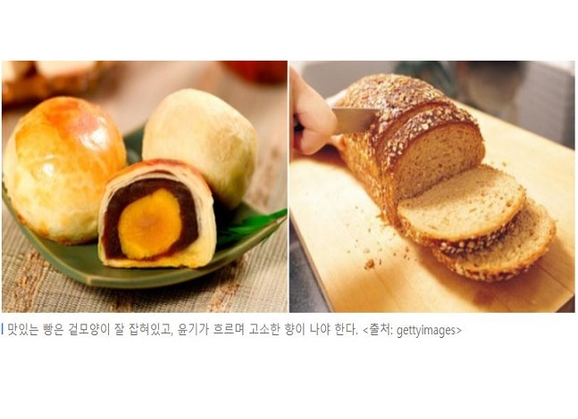

|  |
빵에는 많은 양의 탄수화물이 포함되어 있으며 빵에 포함되어 있는 탄수화물의 대부분은 밀에서 추출된 것이다. 빵에서 흡수된 당분에는 저분자 탄수화물이 있기 때문에 천천히 분해되면서 인체에 필요한 에너지를 공급한다. 또한 전분이 많은 음식은 적당한 양의 인슐린과 혈당량을 제공하며 포만감을 오랫동안 지속하게 해준다. 빵에는 육류에 버금가는 단백질이 들어있는데 밀이나 호밀에 들어 있는 식물성 단백질에는 동물성 단백질과 달리 지방의 신진대사를 방해하는 콜레스테롤이 없다. 최근 들어 등장하는 통밀빵과 호밀빵 같은 건강한 빵들은 풍부한 섬유질과 무기질을 포함하고 있다. 흰색 빵보다는 상대적으로 색이 어두운 빵에 더 많은 섬유질이 들어있는데, 보통 야채가 1~3%, 흰 밀에 3~4%, 호밀에는 7~9% 정도의 섬유질이 있다. 베이글과 같이 밀가루와, 물, 소금으로만 만든 빵은 열량이 낮아 다이어트 식품으로 큰 인기를 얻고 있다. 하지만 이러한 빵에 잼이나 버터를 바를 경우 영양소의 균형이 깨지면서 열량 또한 상당히 늘어나게 된다. 또한 빵을 만드는 과정에서 들어가는 당분과 유지방은 과한 열량을 유발할 수 있다. 그렇기 때문에 빵을 먹을 때에는 한 번에 적당한 양을 먹는 것이 필요하며 곁들여 먹는 버터와 잼 등도 적당하게 섭취하는 것이 바람직하다. |